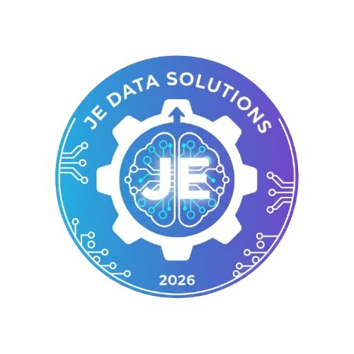
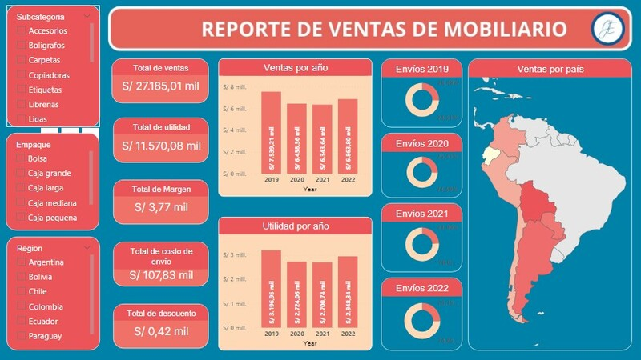
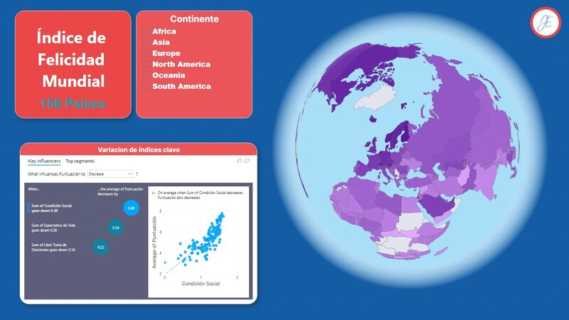

Transformo procesos operativos en sistemas data-driven mediante Python, SQL y Power BI para optimizar la gestión de activos y capital de trabajo.
Ingeniero Empresarial & Consultor de Business Intelligence
Profesional tech-oriented con 3 años de experiencia en Business Intelligence y gestión de proyectos. Mi expertise integra la ingeniería de procesos con el análisis de datos para desarrollar soluciones end-to-end que resuelven problemas operativos reales.
Lideré la transformación del sistema de Control Patrimonial y Almacenes en EPS Selva Central:
Mi enfoque combina metodologías ágiles (BPMN, PMBOK) con herramientas técnicas (Python, SQL, Power BI) para optimizar procesos operativos y generar insights accionables que mejoran la gestión de activos y capital de trabajo.
"No solo analizo datos; diseño sistemas que transforman operaciones caóticas en procesos eficientes"
Tecnologías y metodologías que domino
Identificación de áreas de oportunidad para definir objetivos estratégicos y desarrollar indicadores de gestión.
Elaboración del mapa de procesos AS IS / TO BE con aplicación BPM para la mejora o rediseño de procesos.
Diseño y administración de bases de datos para el almacenamiento de datos del negocio y consultas analíticas.
Aplicación del procesamiento ETL para extraer, transformar y cargar datos en Datamarts para análisis.
Elaboración de reportes de analítica de datos y comunicación de información a stakeholders.
Elaboración del plan de trabajo acorde a las áreas de conocimiento del PMBOK para la gestión de proyectos.
Proyectos destacados y casos de éxito
Transformación completa del sistema de gestión de activos fijos para EPS Selva Central.
Ver detalles
Rediseño de flujos operativos para mejorar eficiencia y reducir tiempos de procesamiento.
Ver detalles
Desarrollo de panel de control ejecutivo para monitoreo de KPIs empresariales.
Ver detalles¿Tienes un proyecto en mente? Hablemos
¿Tienes un proyecto en mente o necesitas asesoría? No dudes en contactarme.
jebohorquez@hotmail.com
+51 987 178 382
Perú